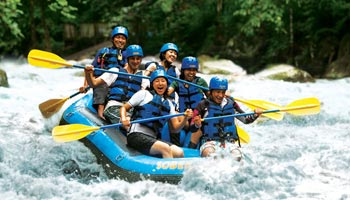

Ayung Rafting
Kegiatan rafting di Bali dapat dilakukan di beberapa sungai. Di sungai Telaga Waja atau lebih terkenal dengan nama rafting Telaga Waja dan sungai Ayung di Desa Payangan Ubud Bali, seperti yang diketahui Ubud adalah salah satu objek wisata di Bali. Untuk menuju ke tempat ini menempuh waktu 1 jam dari Bandara Ngurah Rai Bali, melewati obyek wisata Kuta, objek wisata Sanur dan kota Denpasar.
Ayung Rafting Ubud Bali
Setelah sampai di tempat starting point, rafting di sungai Ayung akan segera dimulai. Para peserta akan diberi pengarahan oleh instruktur yang sudah terlatih dan berpengalaman dengan Ayung river rafting. Misalnya pengenalan alat-alat yang digunakan seperti jaket pelampung, dayung, perahu karet, posisi duduk di atas perahu, cara penyelamatkan diri jika perahu terbalik, dan hal- hal lainnya yang berkaitan dengan kenyamanan dan keselamatan peserta.
Masing-masing boat menampung 4 orang peserta ditambah 1 orang instruktur. Selama kurang lebih 2 jam anda akan mencoba mengarungi derasnya sungai Ayung yang menempuh jarak kurang lebih 12 km. Dalam perjalanan peserta dapat menikmati jeram-jeram sungai Ayung dan berfoto-foto di batu batu pinggir sungai yang latar belakangnya ukir-ukiran sepanjang ratusan meter. Hal ini mencerminkan kreatifitas seni yang tinggi dari orang Bali sehingga menjadi ciri khas dari obyek wisata rafting di sungai Ayung.

Bagi anak-anak yang ingin mencoba Ayung Rafting, tidak perlu khawatir karena airnya tidak terlalu deras dan jeramnya tidak menukik. Namun harus tetap ditemani orang tua masing-masing. Olahraga ini sangat seru dan menantang. Apalagi dilakukan beramai ramai bersama keluarga dan teman.
Setelah mengarungi air sungai Ayung sepanjang 12 km, peserta akan sampai di stopping point. Di tempat ini disediakan tempat beristirahat, ruang ganti, kamar mandi, dan handuk gratis. Kegiatan akan dilanjutkan dengan menikmati makan siang dengan menu buffet yang telah disediakan. Obyek wisata Ayung Rafting ramai dikunjungi wisatawan dari dalam negeri maupun mancanegara. Terutama menjelang Natal, Tahun Baru, liburan sekolah dan hari libur nasional lainnya.
Payung Rafting

Bali Adventure Rafting